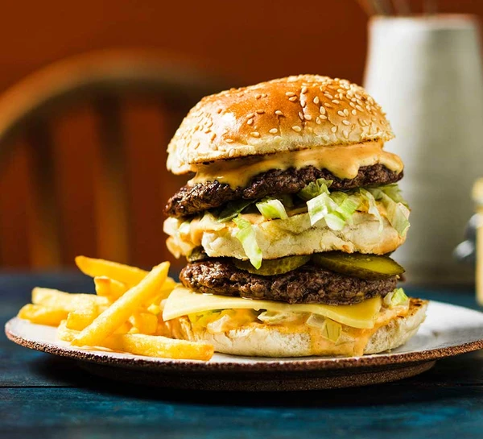

The Big Double Cheeseburger & Secret Sauce

Description
Forget the takeaway and make homemade cheeseburgers – double decker versions. With gherkins, crisp lettuce and a secret sauce, they take some beating
Ingredients
- 1 small onion, finely chopped
- 4 sesame-topped burger buns
- 300g steak mince
- 1 tbsp sunflower oil
- small wedge of iceberg lettuce, finely shredded
- 2 slices of mild cheddar or burger cheese
- 1 gherkin sliced lengthways
- oven fries, to serve
For the secret sauce
- 100g mayonnaise
- 1 tbsp American mustard
- large pinch garlic granules
- large pinch onion granules
- ¼ tsp smoked paprika
- 1 tbsp white wine vinegar
- 1 tsp pickle relish or finely chopped gherkin
Steps
- Tip the onions into a small bowl and pour over boiling water from the kettle until just covered. Leave to cool. Put all the sauce ingredients in another small bowl, then add 1 tbsp of the cooled onion water and mix until everything is evenly combined.
Set aside.
- Halve two of the burger buns, then cut a thick slice from the middles of the other two buns. Toast or grill the middle slices on both sides and the other buns only on the cut sides, then set aside. Heat the oven to 100C/80C fan/gas 2.
- Divide the mince into four loose piles and season. Heat ¼ tbsp of the oil in a heavy frying pan or skillet over a high heat and put one of the piles of beef in the pan. Working quickly, cover with a square of baking parchment and carefully use
a second pan to press the beef patties down – be careful of the heat and rising steam as you do this. Keep the patties pressed down for about 10 seconds, then remove the weight and the paper, and leave the burger to cook for 2 mins more. Turn
the patties and press down using a spatula, cooking for another 1 min. Transfer to a tray and keep warm in the oven while you cook the other burgers in the same way.
- When all the patties are cooked, it’s time to assemble the burgers. Spread some sauce over the bun bases, scatter with onions, then add lettuce, followed by a cheese slice, then a patty, a few gherkin slices and a middle slice of toasted bun.
Spread over more sauce, then add more onions, lettuce, another patty and the bun tops. Serve with the oven fries and extra sauce on the side, if you like.
Recipe Tips
Pickle Relish
This is a chunky condiment made by simmering gherkins and onions with a sweet and sour mix of sugar and vinegar. It’s an all-American accompaniment to burgers and hot dogs, and an ingredient often used in ‘secret’ burger sauces. It’s not often readily
available in the UK but you can buy it online, or make a cheat’s version. Just mix finely chopped gherkins with a bit of their pickling liquid for a reasonable substitute.
Back To Main Page